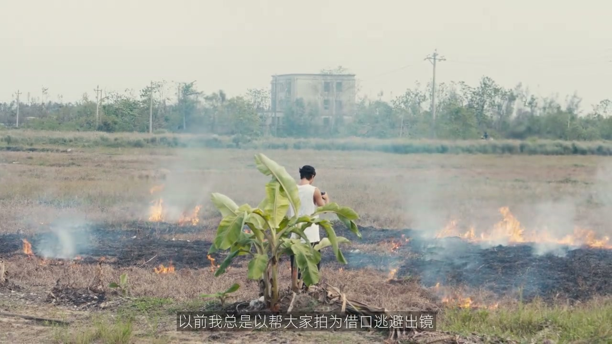

内容要点
[00:00] 合影是人類社交活動中至關重要的一環
[00:03] 當愛人類還在考慮該推到多遠的時候
[00:06] 藝人們已經過活了一隻野生路人
[00:23] 人類的計劃從使用工具開始
[00:25] 在支持手機的同時
[00:26] 他們發現了換個角度好像有平視更生動一點
[00:40] 看來推選領袖
[00:41] 誒誒誒快快快站好站好站好站好
[00:43] 你倆換一下換一下換一下
[00:45] 是他們目前發展的必經症
[00:48] 前後錯誤
[00:49] 兩噸兩戰
[00:52] 三滴一缸
[00:54] 人類往往善於將經驗總結成口訣
[00:59] 文藝復興運動來勢洶洶
[01:01] 他們開始從專輯封面和影視作品中急許領感
[01:18] 進化持續發生
[01:20] 人類開始向高處
[01:23] 進化持續發生
[01:37] 你們有沒有想過
[01:39] 當我們在拍合影的時候
[01:41] 我們到底在拍什麼
[01:42] 哲學本該最早出現的哲學
[01:45] 終於誕生了
[01:47] 我們拍的應該是故事的嗎
[01:51] 我們拍的應該是值得紀念的時刻
[01:54] 好起來動起來
[01:56] 需要生命力
[02:06] 是人類社交活動中只管重要的一環
[02:08] 它包含了太多東西
[02:12] 你們當然去了哪兒啊
[02:13] 我看你們倆那時候那麼瘦
[02:15] 你跟他們還聯繫嗎
[02:20] 都被定格在了到處到零的那一刻
[02:23] 有的人也許幾年都不會自拍一場
[02:26] 甚至是唯一回看過去自己的窗口
[02:28] 以前我總是以幫大家拍為藉口
[02:30] 逃避出境
[02:32] 現在沒這個機會了
[02:34] 誰叫圖拉斯吃點殼實在太方便了
[02:37] 隨時隨地一放就可以拍攝
[02:39] 任意角度都能停住
[02:41] 高處低處任意懸掛
[02:42] 只要是能磁吸的地方
[02:43] 都能直接變身攪機
[02:45] 不用麻煩路人
[02:46] 也不用總是少一個人
[02:47] 當值得記錄的時刻發生時
[02:49] 一部手機
[02:50] 加一塊圖拉斯吃點殼
[02:52] 就是最要你心情舒暢的選擇
[02:56] 我是不喜歡合影我不多頭目
[02:59] 我們下次再見


